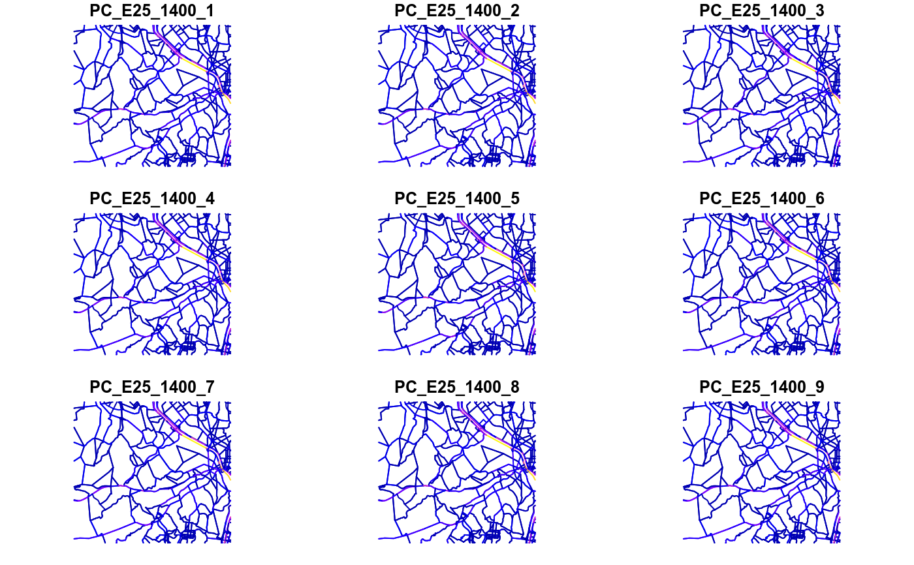

my_age.Rdmy_age returns amount of vehicles at each age using a
numeric vector.
my_age(x, y, name = "age", k = 1, pro_street, net, message = TRUE)
| x | Numeric; vehicles by street (or spatial feature). |
|---|---|
| y | Numeric or data.frame; when pro_street is not available, y must be 'numeric', else, a 'data.frame'. The names of the columns of this data.frame must be the same of the elements of pro_street and each column must have a profile of age of use of vehicle. When 'y' is 'numeric' the vehicles has the same age distribution to all street. When 'y' is a data.frame, the distribution by age of use varies the streets. |
| name | Character; of vehicle assigned to columns of dataframe. |
| k | Integer; multiplication factor. If its length is > 1, it must match the length of x |
| pro_street | Character; each category of profile for each street. The length of this character vector must be equal to the length of 'x'. The characters of this vector must be the same of the 'data.frame' 'y'. When pro_street is not used, 'y' must be a numeric vector. |
| net | SpatialLinesDataFrame or Spatial Feature of "LINESTRING" |
| message | Logical; message with average age and total numer of vehicles. |
dataframe of age distrubution of vehicles.
{ data(net) dpc <- c(seq(1,20,3), 20:10) PC_E25_1400 <- my_age(x = net$ldv, y = dpc, name = "PC_E25_1400") class(PC_E25_1400) plot(PC_E25_1400) PC_E25_1400sf <- my_age(x = net$ldv, y = dpc, name = "PC_E25_1400", net = net) class(PC_E25_1400sf) plot(PC_E25_1400sf) PC_E25_1400nsf <- sf::st_set_geometry(PC_E25_1400sf, NULL) class(PC_E25_1400nsf) yy <- data.frame(a = 1:5, b = 5:1) # perfiles por categoria de calle pro_street <- c("a", "b", "a") # categorias de cada calle x <- c(100,5000, 3) # vehiculos my_age(x = x, y = yy, pro_street = pro_street) }#>#>#>#> #> Average = 10.21#>#>#>#> Warning: plotting the first 9 out of 18 attributes; use max.plot = 18 to plot all#>#>#>#> Result for Vehicles #> age_1 age_2 age_3 age_4 age_5 #> 1 3.333333 [1/h] 6.666667 [1/h] 10.0 [1/h] 13.33333 [1/h] 16.66667 [1/h] #> 2 166.666667 [1/h] 333.333333 [1/h] 500.0 [1/h] 666.66667 [1/h] 833.33333 [1/h] #> 3 0.500000 [1/h] 0.400000 [1/h] 0.3 [1/h] 0.20000 [1/h] 0.10000 [1/h]